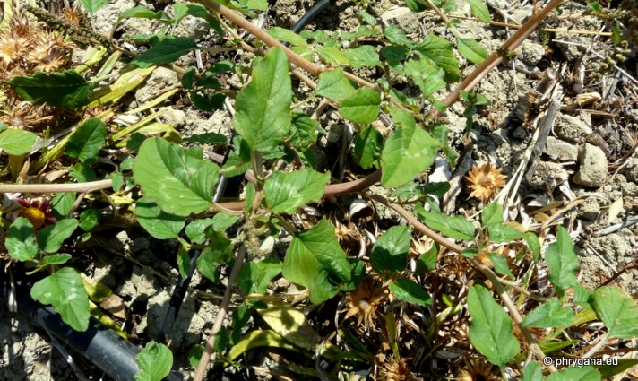
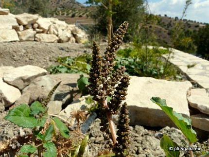
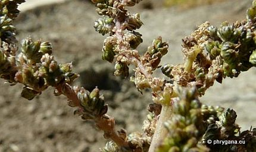
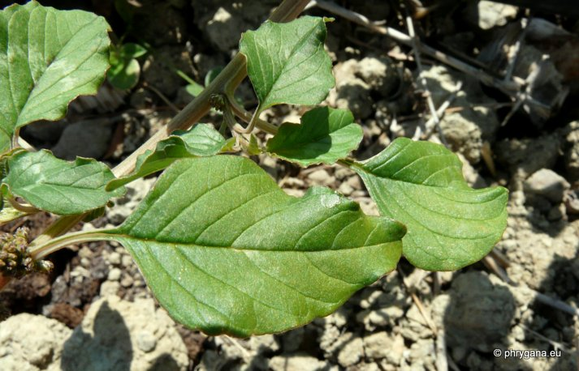
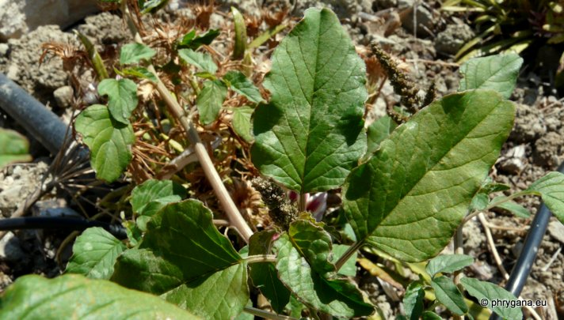

| PHRYGANA | Fauna | Flora | Galles | liste des espèces |
contact -
info - commentaires phrygana1 (at) gmail.com |
| Particularités crétoises | nouveautés | Mines | ressources naturelles |
| Amaranthus viridis L. |
| 405 | Flora | AMARANTHACEAE (incl.Chenopodiaceae) | Amaranthoideae | Amaranthus L. |
|
 Amaranthus viridis Melambes (Agios Giorgos) 07 septembre 2012 |
| syn.: Amaranthus gracilis Desf. | |
| l'Amarante verte -- Slender Amaranth -- Grüner Fuchsschwanz -- Amaranto verde -- Bledo verde -- βλητο λεπτο | |
| Plante à tiges dressées, ramifiées, vertes, parfois teintées de rouge, un peu anguleuses, glabres à glabrescentes vers le sommet | |
| Feuilles: pétiolées, entières, non émarginées au sommet, ovales, ovales-oblongues à ovales-elliptiques (30 - 90 x 25 - 60 mm), | |
| Fleurs: inflorescence dressée, à branches minces; fleurs serrées, vertes; tépales:3; étamines:3; bractées petites (1mm); stigmates: 2 - 3 | |
| Fruit: utricule indéhiscent, 1 - 1.5 mm, non enflé, globuleux, distinctement ridé, avec un apex pointu; graines petites, noires | |
| Hauteur: 20 - 90 cm | Type biologique: thérophyte ramifié |
| Floraison: mai juin juillet août septembre octobre novembre décembre | |
| Altitudes: 0 - 200 m | |
| Statut en Crète: introduite, naturalisée, parfois cultivée | |
| Biotopes en Crète: terrains riches en nitrates, ruines, chemins, jardins, sables littoraux, vergers | |
| Distribution: Europe, région Méditerranéenne, Asie tempérée, Amérique du Nord, Afrique, devenu subcosmopolite | |
| Origine: Amérique du Sud | |
| Belgique: xénophyte rare | |
| Usage culinaire: en Crète: les jeunes feuilles sont consommées bouillies et servies avec un peu de citron et d'huile d'olives, sous le nom de 'Horta' | |
|

 Amaranthus viridis Melambes (Agios Giorgos) 07 septembre 2012 |
|
 Amaranthus viridis Melambes (Agios Giorgos) 07 septembre 2012 |
|
 Amaranthus viridis Melambes (Agios Giorgos) 07 septembre 2012 |
| 14 septembre 2012 |
| © paul fontaine -- © Phrygana.eu 2007 -- 2013 |